Condition/Cause/Correction # 5
Condition 5Seat will not release from floor.
When this condition is present, the seat will be fully latched to the vehicle but will not release. When the removal handle #3 is activated to remove the seat, the outboard seat latch will release, but the inboard seat latch will not release, or both the outboard and inboard latches will not release. This is Not an intermittent condition. Once this occurs in the vehicle, the seat will not tumble or release from the vehicle for removal.
Cause 5
This condition may be caused by one or more of the control cables, located in the lower seat assembly, coming out of its retaining bracket. If this occurs, the outboard seat latch will release but the inboard seat latch will not release, or both latches will not release.
Correction 5
Use the following steps to remove the affected seat, revise the cable bracket and secure the cable using a cable tie strap. This procedure will require the replacement of the seat trim. The original panel will be unusable after the access hole is created.
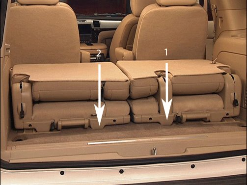
1. Locate the area to drill the access hole. On the right seat, the location is next to release lever #2 (1). On the left seat, the location is inboard of release handle #3 (2).
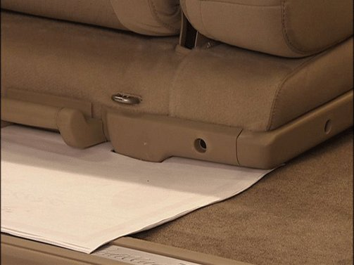
2. Protect the carpet with cardboard as shown.
Note
Ensure that the hole saw centering drill does not protrude more than 3.0 mm (1/8 in) past the saw teeth. This is to prevent the drill bit from damaging the seat cover.
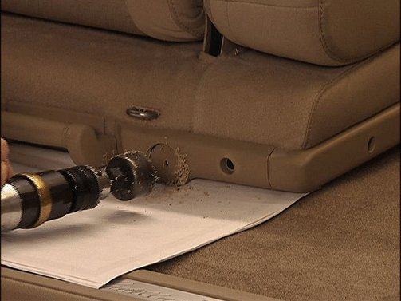
3. Using a drill equipped with a 45 mm (1 3/4 in) hole saw, drill an access hole as shown.
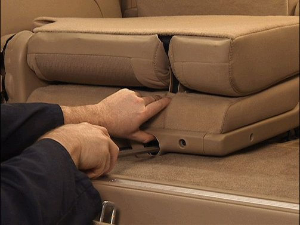
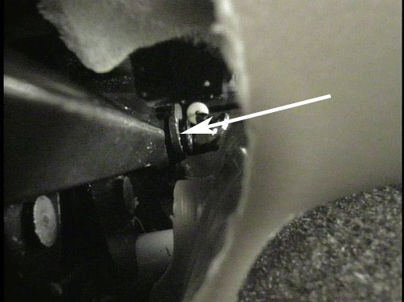
4. Apply forward pressure on the cable end with a large standard screwdriver through the access hole (1). This will release the inboard latch. Pull straight rearward on removal handle #3 to release the seat assembly from the vehicle.
5. With the seat assembly removed from the vehicle, remove the lower seat trim panels. Refer to Rear Seat Number 2 Cushion Panel Replacement in SI.
6. Clean the latch area of any plastic debris left from the drilling procedure.
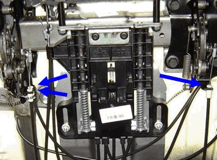
7. Observe correct seat latch release cable routing as shown in the image above.
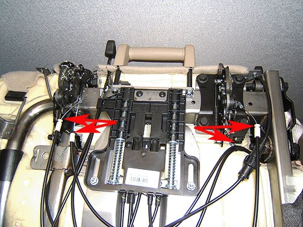
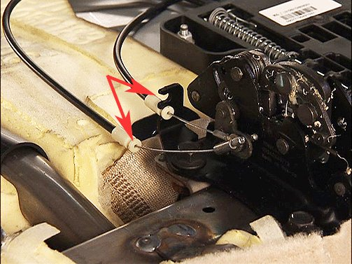
8. Locate the release cable(s) that are out of the bracket(s).
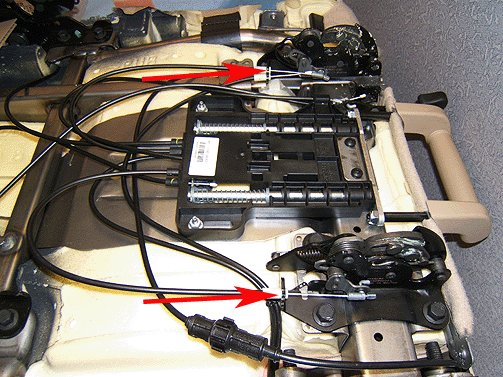
9. Clip the cables into the brackets.
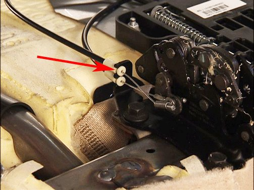
10. Ensure the affected cable(s) is/are fully seated in the bracket(s).
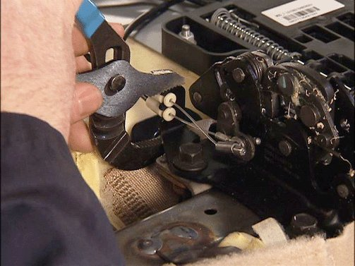
11. Using a large pair of locking-type pliers, squeeze the cable brackets as shown. This will lock the cable into the bracket.
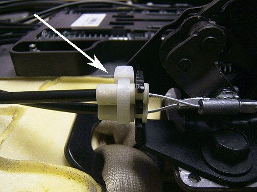
12. To ensure that the cable stays in position, install a cable tie strap as shown. This step only applies to the bracket with two cables.
13. Install a new lower seat trim panel. Reinstall the side trim panels. Refer to Rear Seat Number 2 Cushion Panel Replacement in SI.
14. Install the seat assembly and confirm the proper operation of the tumble and release functions. Cycle the seat functions five times to verify the repairs.